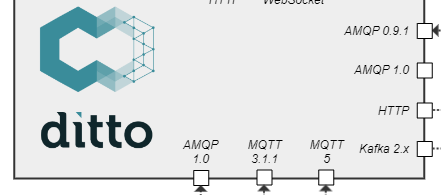
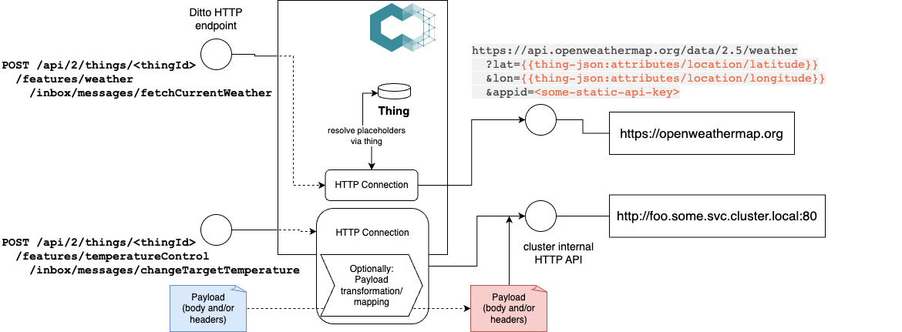
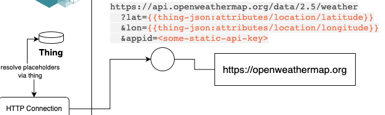
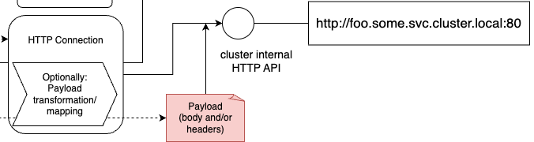
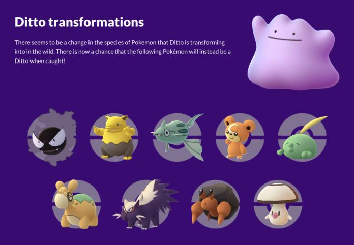

Knowledge Nugget
Ditto:
Connections
and how to provide facades to external APIs via Ditto
24.10.2023 @ beyonnex.io
by Thomas Jäckle (@thjaeckle)
Eclipse Ditto in context

Ditto as
IoT
and/or
Digital Twin
"middleware"
recap: device data as APIs
{
"thingId": "io.beyonnex.srt:my-srt",
"policyId": "io.beyonnex.room:my-room",
"attributes": {
"serial": "4711-0815",
"location": {
"buildingId": "nice-building"
}
},
"features": {
"temp": {
"properties": {
"value": 23.42
}
}
}
}JSON repr. of a Thing
GET/PUT/PATCH/DELETE /things/io.beyonnex.srt:my-srt
/things/io.beyonnex.srt:my-srt/thingId
/things/io.beyonnex.srt:my-srt/policyId
/things/io.beyonnex.srt:my-srt/attributes
/things/io.beyonnex.srt:my-srt/attributes/serial
/things/io.beyonnex.srt:my-srt/attributes/location
/things/io.beyonnex.srt:my-srt/attributes/location/buildingId
/things/io.beyonnex.srt:my-srt/features
/things/io.beyonnex.srt:my-srt/features/temp
/things/io.beyonnex.srt:my-srt/features/temp/properties
/things/io.beyonnex.srt:my-srt/features/temp/properties/value
HTTP API of the Thing
→ docsin a nutshell

let's talk about "connections"
Ditto provides persistence and APIs to manage Connections

use cases
- provide connectivity to IoT devices
- abstracting from different IoT protocols
- transforming payloads
- as IoT middleware, provide integration with existing
IT landscape and external systems, e.g.:
- building up sensor timeseries in a TSDB
- copying data to a datalake
- providing facade for other HTTP APIs
- transforming payloads
features
- Ditto
connectivitytakes care of- connection establishment
- reliably reconnecting upon reset
- transforming payloads, even executing dynamic JS based mappers
- qos (e.g. "at least once" processing)
- consumption throttling
- providing metrics, logs
- stuff like SSH tunneling,
for HTTP: OAuth2.0 auth, HMAC signing
facade to external APIs
example of HTTP APIs
Ditto brokers messages

- e.g. directly providing HTTP and WebSocket APIs
- invocation of other HTTP (but also AMQP, Kafka) based APIs
- correlating responses back to requests
- but also: abstracting API invocation via other protocols (e.g. invoke MQTT API via HTTP)
- propagating "Trace context"
facade for public/ext APIs
Benefits:
- enhancing "digital twin" with other service's offerings
- providing the "context" of the thing to enhance API call
- transforming payload to what external API needs
facade for internal APIs
Benefits:
- internal APIs do not need to provide own auth*
- access control fully enforced by Ditto
- foster use "microservices" pattern providing single aspects (e.g. also AWS lambda)
mapping / transformation
- devices should not be required to be aware of Ditto
- other backends define their API payloads

what can ditto transform?
- protocol headers:
- accessing placeholders to inject in headers
- mapping protocol header from consumed messages to internal headers
- e.g. HTTP headers, Kafka message headers, MQTT user properties
- message payloads:
- using existing payload mappers
- using dynamic JS-based payload mapper, providing own mapping script
header mapping: placeholders
{{ thing:id }} # affected (e.g. modified) thing id
{{ feature:id }} # affected feature id
{{ header:[header-name] }} # internal or external header value, depending on which "direction" of mapping
{{ topic:full }} # the full Ditto Protocol topic, e.g.: io.beyonnex/srt-123/things/twin/events/merged
{{ topic:entityName }} # the entity name of the Ditto Protocol topic, e.g.: srt-123
{{ topic:action }} # the action of the Ditto Protocol topic, e.g.: merged
{{ thing-json:[json-pointer] }} # the content of the JSON field in the affected thing, identified by the JSON pointer
{{ time:now }} # the current timestamp in ISO-8601 format
header mapping: functions
now the fun starts - what if transforming headers need to be done? sure, provide a function library
{{ header:foo | fn:default('fallback') }} # provide a default value if placeholder not existing
{{ header:foo | fn:substring-before(':') }} # select parts of a string
{{ header:foo | fn:substring-after(':') }} # select parts of a string
{{ header:foo | fn:replace('foo','bar') }} # replace characters in a string
{{ header:foo | fn:lower() }} # lowercase
{{ header:foo | fn:upper() }} # uppercase
{{ header:foo | fn:trim() }} # trim from trailing/appended whitespaces
{{ header:foo | fn:split(',') }} # split string by delimiter
{{ header:foo | fn:join(';') }} # join array into a string
{{ header:foo | fn:url-encode() }} # URL encode string
functions can - obviously - be combined with pipes |
payload mapping
- inbound messages to be understood by Ditto:
- use JavaScript mapper with custom script
- provide Java based mapper on classpath of Ditto, e.g. using protobuf
- outbound messages to be understood by others:
- Normalized mapper
- use JavaScript mapper with custom script
- provide Java based mapper on classpath of Ditto, e.g. using protobuf
Demo
- Ditto Explorer UI
- Postman